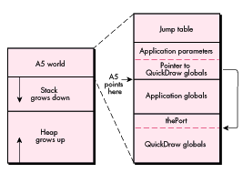
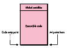
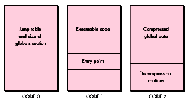
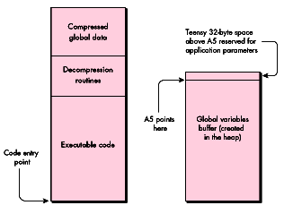
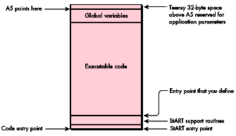

While MPW is great for developing applications, it provides little support for
creating standalone code resources such as XCMDs, drivers, and custom window,
control, and menu definition procedures, especially if you have nonstandard needs. Two
roadblocks developers immediately notice are the inability to create more than 32K of
object code and the lack of access to global variables. This article addresses the latter
issue.
The Macintosh Technical Note "Stand-Alone Code,ad nauseam " (formerly #256) does
an admirable job of explaining what standalone code is and discussing the issues
involved in accessing global variables from within it. I'll describe the solution
proposed in that Tech Note later in this article, but you may also want to look over the
Note before reading further.
It's important to realize that the Tech Note discusses just one possible solution to the
problem of using global variables in standalone code. This article presents another
solution, in the form of the StART package included on theDeveloper CD Series disc.
Along the way, I'll talk a bit about what the issues are, describe how users of
Symantec's THINK environments address the problem, recap the solution presented in
the Tech Note, and show how to use MPW to implement a THINK-style solution. I'll also
take a look at the advantages and disadvantages of each approach, allowing you to choose
the right solution for your needs.
Note that the StART package is a solution for MPW users and that it assumes a lot
about how MPW currently works. It's possible that you may not be able to use the
StART package to develop standalone code that uses globals with future versions of
MPW, although code already created with StART will, of course, continue to work.
Standalone code is merely executable code that receives little to no runtime support
from the Macintosh Operating System. The advantage of standalone code resources is
that they can be quickly loaded into memory, executed, and dismissed without the
overhead of setting up a full-fledged runtime environment for them. In addition,
standalone code can execute without affecting the currently running application or
relying on it for any services. This makes such resources ideal for easily extending the
system's or your application's functionality. By creating the right kinds of standalone
code resources, you can change how controls or windows appear, or you can
dynamically extend the capabilities of your application.
Table 1 shows a list of the most common system- and application-defined standalone
code resources.
Table 1Kinds of Standalone Code Resources
| Resource Type | Resource Function |
ADBS* | ADB device driver |
adev* | AppleTalk link access protocol |
boot | Boot blocks |
CACH | System RAM cache code |
CDEF* | Custom control definition |
cdev* | Control panel device |
dcmd* | Debugger extension |
dcmp | Resource decompressor |
DRVR* | Device driver |
FKEY* | Function key |
FMTR | 3.5-inch disk formatting |
INIT* | System extension |
itl2 | Localized sorting routines |
itl4 | Localized time/date routines |
LDEF* | Custom list display definition |
MBDF* | Custom menu bar definition |
MDEF* | Custom menu definition |
mntr* | Monitors control panel extension |
PACK | System package |
PDEF* | Printer driver |
PTCH | System patches |
ptch | System patches |
rdev* | Chooser device |
ROvr | ROM resource override |
RSSC* | Resource editor for ResEdit |
SERD | Serial driver |
snth* | Sound Manager synthesizer |
WDEF* | Custom window definition |
XCMD* | HyperCard external command |
XFCN* | HyperCard external function |
Note: Items marked with an asterisk are ones that you might create for your own
application, extension, driver, or whatever. The rest are reserved for the system.
Standalone code differs from the executable code that makes up an application, which
has a rich environment set up for it by the Segment Loader. Let's take a look at an
application's runtime environment so that we can better understand the limitations we
must overcome to implement standalone code.
An application runs in a section of memory referred to as its partition. Figure 1 shows
the layout of an application partition. A partition consists of three major sections. At
the top of the partition is the application'sA5 world , consisting of the application's
global variables, the jump table used for intersegment function calls, and 32 bytes of
application parameters (see "Application Parameters"). This area of memory is
called the A5 world because the microprocessor's A5 register points into this data and
is used for all access to it. Immediately below the A5 world is thestack , the area of
memory used to contain local variables and return addresses. The stack grows
downward toward theheap , which occupies the rest of the partition. The heap is used
for all dynamic memory allocation, such as blocks created by NewHandle and NewPtr.
Everything we see in Figure 1 -- the heap (with a valid zone header and trailer), the
stack, and the filled-out global variables and initialized jump table -- is created by
the Segment Loader when an application is launched.

Figure 1 An Application Partition
This is the application's domain, and none shall trespass against it. And therein lies the
conflict between applications and standalone code: Executing code needs to use the A5
register to access its global variables, but an application's use of A5 prevents any
standalone code from using it with impunity. Additionally, the A5 world is created by
the Segment Loader when an application is launched. Since standalone code is not
"launched" (instead, it's usually just loaded into memory and JSRed to), it doesn't get
an A5 world, even if A5 were available. We must solve these two problems
-- the contention for A5 and the need to set up some sort of global variable space -- in
order to use globals in standalone code.
APPLICATION PARAMETERS
Not much is known about the mysterious 32 bytes directly above A5 known as
application parameters. Figures 9 and 10 on pages 19 and 21 of Inside Macintosh
Volume II indicate their existence, but the description simply says that "they're
reserved for use by the system." We know that the first four bytes contain a pointer
into the QuickDraw globals, but that's about it. Some MPW glue routines use some of
the other bytes, but that use is undocumented. In any case, the application parameters
seem pretty important. As you'll see later, we make sure our standalone code
resources support them.
For years, users of THINK C and THINK Pascal have been able to use global variables in
their CDEFs, LDEFs, drivers, and other types of standalone code. THINK has solved the
problem of A5 contention by compiling standalone code to use the A4 register for
accessing globals, leaving A5 untouched. Their solution to the need to set up global
variable space is simply to attach the globals to the end of the standalone code, again
leaving the application's A5 world untouched.
Figure 2 shows how standalone code created by a THINK compiler looks, both on disk
and in memory. If the code was created with the C compiler, which allows
preinitialized global variables, the global variable section contains the initial values.
If the code was generated by the Pascal compiler, which sets all global variables to
zero, the entire global section simply consists of a bunch of zeros (kind of like some
guys I used to know in high school).
This is in contrast to the way globals are stored on disk for applications. MPW, for
instance, uses a compressed data format to represent an application's globals on disk.
When the application is launched, a small bit of initialization code is executed to read
the globals from disk, expand them, and write them into the application global variable
space in its A5 world.
Standalone code created by a THINK compiler accesses global variables by using
A4-relative instructions. Because the use of the A4 register is ungoverned, such
standalone code must manually set up A4 so that it can be used to reference its global
variables. This setup is done by some macros provided by the THINK headers:
RememberA0 and SetupA4. (It's called RememberA0, and not RememberA4, because
the macro has to store the value in the A0 register temporarily.) When the standalone
code is finished and is about to return to its caller, it must call RestoreA4 to restore
the value that was in A4 before the standalone code was called.

Figure 2 Format of a Standalone Code Resource Created by a THINK Compiler
The solution provided by THINK offers many advantages:
There are at least three disadvantages to THINK's approach, however:
A fourth disadvantage could be that the combined size of the executable code and the
global variables must be less than 32K. However, this is somewhat ameliorated by
THINK's support of multisegmented standalone code.
Users of THINK development systems have their solution for accessing global
variables in standalone code. MPW users, however, don't have an immediately obvious
solution. First, MPW's compilers don't have the option of specifying that A4 should be
used to access global variables. Second, the MPW linker is written to create a
compressed block of data representing the global variables and to place that block of
data off in its own segment. Because A4 can't be used to access globals, and because the
globals aren't attached to the end of the standalone code resource, MPW users don't
have the slick solution that THINK users do.
A possible alternative was presented to MPW users a couple of years ago with the
publication of the Technical Note "Stand-Alone Code,ad nauseam ." Let's take a quick
look at that approach, and then compare it with THINK's solution.
Let's start by examining the format of a simple application, shown in Figure 3. This is
the format that MPW is designed to create, with any deviance from the standard
formula being cumbersome to handle.
This application has three segments. CODE 0 contains the information used by the
Segment Loader to create the jump table, the upper part of an application's A5 world.
CODE 1 contains executable code, and usually contains the application's entry point.
CODE 2 contains the compressed data used to initialize the global variable section of the
application's A5 world, along with a little bit of executable code that does the actual
decompressing. This decompression code is automatically called by some runtime setup
routines linked in with the application. The purpose of the call to
UnloadSeg(@_DataInit) in MPW programs is to unload the decompression code along
with the compressed data that's no longer needed.
The solution proposed in the Tech Note is to use a linker option that combines
segments 1 and 2. At the same time, the Note provides a couple of utility routines that
create a buffer to hold the global variables and that decompress the variables into the
buffer. Figure 4 shows what standalone code looks like when it's running in memory.

Figure 3 Format of a Simple Application Created by MPW

Figure 4 Format of Standalone Code Using the Tech Note Method
When the standalone code is called, it's responsible for creating and initializing its
own A5 world. It does this by calling OpenA5World, which is directly analogous to
THINK's SetupA4 macro. OpenA5World creates the buffer shown on the right in
Figure 4, sets A5 to point to it, and calls the decompression routines to fill in the
buffer. When the standalone code is ready to exit, it must call CloseA5World to
deallocate the buffer and restore the original value of A5.
Note that this approach has an immediate disadvantage compared to the THINK
approach. Because the global variables buffer is deallocated when the code exits back to
the caller, all values that were calculated and stored in global variables are lost. This
makes the OpenA5World/CloseA5World solution good if you simply want to use global
variables in lieu of passing parameters, but lousy if you're trying to maintain any
persistent data.
Fortunately, the Tech Note also presents a slight variation on the above solution that
doesn't require that the global variables buffer be deallocated when the standalone code
exits. However, the solution requires a little help from the host application. When the
standalone code exits, it has two problems to consider. The first is that it must find
some way to maintain a reference (usually a handle) to the buffer holding the global
variables. After all, where can the standalone code store this reference itself? It can't
store it in a global variable, because this reference will later be used to recover our
global variables buffer. It can't store the reference in a local variable, because local
variables are destroyed once the function that declares them exits.
The second problem that must be solved when creating a solution that doesn't require
flushing the global variables is that of knowing when it actually is time to dispose of
them. Globals accessed by THINK code resources are attached to the segments
themselves, which means that they're disposed of at the same time as the code resource
itself. What happens if the caller of a standalone code resource created using the
OpenA5World technique decides that it no longer needs that resource? If it simply calls
ReleaseResource on the resource, the global variables used by the standalone code will
be stranded in the heap. This is known as a memory leak, and it is very bad. The block
of memory holding the global variables is no longer referenced by any code, and there's
no way to recover a reference to them. That block of memory will never be disposed of
and will waste memory in the heap.
The approach that the Tech Note takes to solving both of these problems is to require
the help of the caller (usually the host application). First, the caller must agree to
maintain the reference to the standalone code's global variables buffer. After the
buffer is created, the reference to it is passed back to the caller. The next time the
standalone code is called, and all subsequent times, the caller passes that reference
back to the standalone code, which then uses that reference to recover its
globalvariables and reset A5 the way it likes it. Additionally, the caller must agree to
notify the standalone code when it's about to go away. When the standalone code receives
that notification, it takes the opportunity to dispose of the global variables buffer.
Our brief recap of the Tech Note outlines a workable approach that provides a few
advantages over the solution provided by THINK:
There are, however, some disadvantages to the OpenA5World approach. The major
disadvantage concerns the persistence of the global variables buffer. Either this buffer
must be deallocated every time the code resource is exited, or the help of the caller
must be elicited to maintain the reference to the buffer and to tell the standalone code
when the buffer must be deallocated. If you're not in a position to define the
responsibilities of the caller (for instance, if you're writing a WDEF), this
disadvantage could be quite serious.
The second disadvantage concerns the reuse of the A5 register. Once the standalone code
changes A5 from pointing to the caller's A5 world to pointing to the standalone code's
globals, A5 no longer points to a valid set of QuickDraw globals. This can easily be
solved by calling InitGraf early in the standalone code, but some problems may still
exist. For instance, what if the standalone code needed to draw something in the current
port (as an LDEF would need to do)? The GrafPtr of the port to be used is back in the
caller's A5 world. Once we switch over to the standalone code's A5 world, we no longer
know what port to draw into. This problem is briefly alluded to in the Tech Note, but
it's not directly addressed.
It's possible to combine the advantages of the two approaches we've seen so far, while
at the same time eliminating some of the disadvantages. The idea behind the hybrid
approach I'll now present is to con MPW into creating a standalone code resource that
has the same layout as one created by THINK. Specifically, instead of being stored in a
separate buffer, the globals will be tacked onto the end of the code resource. This
eliminates much of the reliance the standalone code has on the caller, and, as you'll see
later, still allows us to create 32K worth of object code and 32K of global data.
As we saw when discussing the Tech Note approach, we need to get MPW to take the
stuff it normally puts in an application and convert it to a standalone code resource.
The OpenA5World solution used a linker option to accomplish this. My solution uses a
custom MPW tool instead.
Let's begin by taking a look at what we'll end up with, and then determine what it will
take to get there. First, the standalone code will access its global variables by using the
A5 register; there's no way around that. Even if we were to pass the object code
through a postcompilation tool that converted all A5 references into A4 references,
there's no way we could take care of the cases where the compiler generates code that
uses A4 for other purposes. Therefore, this solution still uses A5 for accessing
globals. Second, the globals will be tacked onto the end of the standalone code
resource, just as they are with THINK's solution. This means that the globals will be in
a known and easily determined location at all times, relieving us from having to rely
on the caller to maintain our globals. When doing this, we inherit the problem THINK
code has with not being purgeable, but that's a small price to pay for the ease of use we
get in return.
Third, the globals will be in expanded format. The approach taken in the Tech Note
requires that our standalone code carry around the baggage of the decompression
routines, as well as the compressed data, long after they're no longer needed. Using
pre-expanded data means a larger on- disk footprint, but again, this is a small price
to pay, especially if the in-memory footprint is more of an issue (and it usually is).
Finally, we'll need routines that calculate and set our A5 value when we enter our
standalone code, and that restore A5 when we leave. These routines are analogous to the
macros THINK uses and to the OpenA5World and CloseA5World routines of the Tech
Note solution. Figure 5 shows how our standalone code resource will end up looking,
both on disk and in memory.
My system is called StART, for StandAlone RunTime. It consists of two parts: an MPW
tool called MakeStandAlone that converts a simple program like the one shown in
Figure 3 into a standalone code resource, and a small library file with accompanying
header files for Pascal and C.

Figure 5 Format of Standalone Code Using StART Techniques
To show how these pieces work together, let's take a small sample that uses a global
variable, and build it using the StART tools. The sample we'll use is the Persist.p
program included in the Tech Note. Following is a version of the file, modified to make
calls to the StART library.
UNIT Persist;
{ This is a standalone module that maintains a running total of the }
{ squares of the parameters it receives. }
INTERFACE
USES Types, StART;
FUNCTION Main(parm: LONGINT): LONGINT;
IMPLEMENTATION
{ Define global storage to retain a running total over multiple }
{ calls to the module. }
VAR
accumulation: LONGINT;
FUNCTION Main(parm: LONGINT): LONGINT;
VAR
saved: SaveA5Rec;
BEGIN
UseGlobals(saved);
accumulation := accumulation + (parm * parm);
Main := accumulation;
DoneWithGlobals(saved);
END;
END.
This very simple sample performs the useless function of taking the number you pass
it, squaring it, adding the result to a running total, and returning that total. UseGlobals
is the StART routine that enables us to access our global variables (in this case, the
lone variable named accumulation), returning the value of the caller's A5. After we've
performed our mathematical wizardry, we close up shop by calling a second StART
routine, DoneWithGlobals, to restore the previous A5 value.
Following is the makefile for Persist.p.
Persist ƒƒ Persist.p.o Persist.make StARTGlue.a.o
Link StARTGlue.a.o ∂
Persist.p.o ∂
"{Libraries}Runtime.o" ∂
"{PLibraries}PasLib.o" ∂
-sn PASLIB=Main ∂
-o Persist
MakeStandAlone Persist -restype CUST -resnum 129 -o Persist.rsrc
Persist.p.o ƒ Persist.p Persist.make
Pascal Persist.p
This makefile contains a couple of interesting things that are worth examining. The
first point to note is that we link with a file called StARTGlue.a.o. This file contains a
few useful routines, including UseGlobals and DoneWithGlobals. It also contains a
special header routine that performs some crucial setup. This setup needs to be
performed before any of our custom code can be executed, so StARTGlue.a.o should be
the first file in the link list.
The second interesting thing about the makefile is the statement -sn PASLIB=Main.
Recall that MakeStandAlone requires a file that contains the resources shown in Figure
3 in order to perform its magic. Specifically, MakeStandAlone demands that there be
only three segments with a single entry point each into CODE 1 and CODE 2. However,
when we link with PasLib.o, we create a fourth segment called PASLIB. We therefore
get rid of this segment by merging it with the rest of our executable code in CODE 1,
the Main segment.
After linking and running the resulting file through the MakeStandAlone tool, we're
left with a resource containing standalone code that sets up and uses its own set of
global variables. Following are highlights from the Persist sample shown above. Some
routines have been removed, since we'll be examining them in depth later.
Entry
+0000 00000 BRA.S Entry+$0014
+0002 00002 DC.B $0000 ; flags
+0004 00004 DC.B $43555354 ; resource type (CUST)
+0008 00008 DC.B $0081 ; resource ID (129)
+000A 0000A DC.B $0000 ; version
+000C 0000C DC.B $00000000 ; refCon
+0010 00010 DC.B $00000000 ; cached offset to globals
+0014 00014 BRA MAIN
[ UseGlobals, DoneWithGlobals, GetSAA5, and CalculateOffset removed ]
MAIN ; from Persist.p
+0000 000076 LINK A6,#$FFF8
+0004 00007A PEA -$0008(A6) ; UseGlobals(save);
+0008 00007E JSR UseGlobals
+000C 000082 MOVE.L $0008(A6),-(A7) ; parm * parm
+0010 000086 MOVE.L $0008(A6),-(A7)
+0014 00008A JSR %I_MUL4
+0018 00008E MOVE.L (A7)+,D0
+001A 000090 ADD.L D0,-$0004(A5) ; add to accumulation
+001E 000094 MOVE.L -$0004(A5),$000C(A6)
; return as function result
+0024 00009A PEA -$0008(A6) ; DoneWithGlobals(save);
+0028 00009E JSR DoneWithGlobals
+002C 0000A2 UNLK A6
+002E 0000A4 MOVE.L (A7)+,(A7)
+0030 0000A6 RTS
[ %I_MUL4 removed ]
Globals
+0000 000E4 DC.W $0000, $0000 ; global var accumulation
+0004 000E8 DC.W $0000, $0000 ; 32 bytes of app parms
+0008 000EC DC.W $0000, $0000
+000C 000F0 DC.W $0000, $0000
+0010 000F4 DC.W $0000, $0000
+0014 000F8 DC.W $0000, $0000
+0018 000FC DC.W $0000, $0000
+001C 00100 DC.W $0000, $0000
+0020 00104 DC.W $0000, $0000
Entry, UseGlobals, DoneWithGlobals, GetSAA5, and CalculateOffset are all routines
linked in from the StARTGlue.a.o file; MAIN is from the Persist.p source file; and
%I_MUL4 is a library routine from PasLib.o. Following these routines are 36 bytes of
data. The first 4 bytes are for our global variable, accumulation. The final 32 bytes
are the application parameters above A5 that the system occasionally uses.
Let's take a look at the MAIN function, which shows us accessing our global variable.
First, we call UseGlobals to determine what A5 should be and to set A5 to that value. In
this case, UseGlobals will set A5 to point to Globals+$0004, placing our single 4-byte
global below A5, and the 32 bytes of system data above A5. Next, we push the value we
want to square onto the stack twice and call %I_MUL4 to multiply the two 4-byte
values.
Finally, we get to the fun part, where we add the result of %I_MUL4 to our global
variable. This is done by the instruction at MAIN+$001A: ADD.L D0,-$0004(A5).
This instruction says to take the value in register D0 and add it to the number stored
four bytes below A5. Because A5 points to Globals+$0004, this instruction adds D0 to
the value starting at Globals.
THE MAKESTANDALONE TOOL
The code above was created by the MakeStandAlone tool. Let's look now at the workhorse
function of that tool, ConvertAppToStandAloneCode. It's this function that takes an
application conforming to the format shown in Figure 3 and converts it to the
standalone resource shown in Figure 5.
ConvertAppToStandAloneCode starts by declaring a ton of variables, all of which are
actually used. It then opens the file containing the segments shown in Figure 3 by
calling OpenResFile on gInputFile, a string variable set up before calling this routine.
If we can't open the file, we blow out by calling ErrorExit, a routine that prints the
string passed to it and then aborts back to the MPW Shell.
PROCEDURE ConvertAppToStandAloneCode;
VAR
refNum: INTEGER;
code0: Code0Handle;
code1: CodeHandle;
code2: CodeHandle;
sizeOfGlobals: LONGINT;
expandedGlobals: Handle;
myA5: LONGINT;
codeSize: LONGINT;
address: CStrPtr;
err: OSErr;
fndrInfo: FInfo;
existingResource: Handle;
BEGIN
refNum := OpenResFile(gInputFile);
IF (refNum = - 1) | (ResError = resFNotFound) THEN
ErrorExit('Error trying to open the source file.',
ResError);
Loading the segments. ConvertAppToStandAloneCode then scopes out the contents of
the file it has just opened.
The first thing it looks at is CODE 0, which contains the application's jump table. If
CODE 0 exists and we can load it, we mark it nonpurgeable and call a utility routine,
ValidateCode0, to make sure that CODE 0 contains what we expect. Here's what the code
looks like:
code0 := Code0Handle(Get1Resource('CODE', 0));
IF (code0 = NIL) | (ResError <> noErr) THEN
ErrorExit('Couldn't load CODE 0 resource.', ResError);
HNoPurge(Handle(code0));
ValidateCode0(code0);
MakeStandAlone requires that the input file conform strictly to the format shown in
Figure 3. Among other things, this means that there should be only two entries in the
jump table, one for CODE 1 and one for CODE 2. ValidateCode0 checks for this condition
and makes a few other sanity checks to make sure that CODE 0 doesn't contain any other
information that we'd otherwise have to deal with. If there are any problems,
ValidateCode0 calls ErrorExit with an appropriate message. Thus, if ValidateCode0
returns, everything appears to be OK with CODE 0.
At times it might be tricky or impossible to create a CODE 1 resource with only one
entry point. In some cases, you can bludgeon your code into a single segment by
passing-snto the Link tool, as was done earlier. Unfortunately, this won't always
work. For instance, some MPW routines are compiled to require jump table entries.
(Examples of such routines are sprintf and its subroutines.) If you try to use any of
these routines, you'll get more than one entry point in CODE 1. The only way to avoid
this problem is to keep away from library routines that require jump table entries. If
you're in doubt, simply attempt to use the routine in question; the compiler, the
linker, or MakeStandAlone will tell you if anything is wrong.
ConvertAppToStandAloneCode next checks the remaining resources, CODE 1 and CODE
2. CODE 1 contains the executable code that will make up the bulk of the standalone
code resource, and CODE 2 contains the compressed data holding the global variables'
initial values, as well as the routines that decompress that data. Each segment is loaded
and passed to ValidateCode to make sure that the resource looks OK.
code1 := CodeHandle(Get1Resource('CODE', 1));
IF (code1 = NIL) | (ResError <> noErr) THEN
ErrorExit('Couldn’t load CODE 1 resource.', ResError);
HNoPurge(Handle(code1));
ValidateCode(code1, 1, 0);
code2 := CodeHandle(Get1Resource('CODE', 2));
IF (code2 = NIL) | (ResError <> noErr) THEN
ErrorExit('Couldn’t load CODE 2 resource.', ResError);
HNoPurge(Handle(code2));
ValidateCode(code2, 2, 8);
ValidateCode takes a handle to the segment, along with a couple of values used in the
sanity check. The first number is actually the resource ID of the segment and is used
when reporting any errors. The second value is the jump table offset of the entry
point for this segment and is checked against the segment header (seeInside Macintosh
Volume II, page 61, for a description of this header). Again, if any problems are
discovered or any unexpected values encountered (such as more than one entry point
per segment), ValidateCode aborts by calling ErrorExit.
Converting to a standalone resource. Once the three segments have been loaded
into memory and validated, we're ready to convert these resources into a single
standalone resource. We begin by decompressing the data that represents the
preinitialized values for our global data. The first part of accomplishing this is getting
a temporary buffer to hold the expanded values. We find the size of this buffer by
looking at the belowA5 field in CODE 0. We then create a buffer this size by calling
NewHandle.
sizeOfGlobals := code0^^.belowA5;
expandedGlobals := NewHandle(sizeOfGlobals);
IF expandedGlobals = NIL THEN
ErrorExit('Couldn't allocate memory to expand A5 data.',
MemError);
We next perform the magic that expands the global variables into the buffer. CODE 2
contains the decompression routines, so all we do is call them. The function that
performs this decompression is called _DATAINIT, which our validation routines have
already confirmed is the entry point to CODE 2. _DATAINIT needs to have A5 already
pointing to the top of the globals area, which in our case is the end of the handle we
just created. After calling SetA5 to do this, we use CallProcPtr, a little inline
assembly routine, to call _DATAINIT in CODE 2. _DATAINIT fills in our handle with the
initial values for our global variables and then kindly returns to us. We quickly
restore the previous value of A5 so that we can access our own global variables again,
and then prepare to finish with the input file. We'll need CODE 1 later, so we detach it
from the input file, and then close the input file.
myA5 := SetA5(ord4(expandedGlobals^) + sizeOfGlobals); CallProcPtr(ProcPtr(ord4(code2^) + SizeOf(CodeRecord))); myA5 := SetA5(myA5); DetachResource(Handle(code1)); CloseResFile(refNum);
At this point, we're done with the input file, and we have in our possession two
handles. The code1 handle contains the executable code for the standalone resource, and
the expandedGlobals handle contains the global data. Our task at this point is to combine
these two pieces of data.
We start by getting the size of the actual object code in CODE 1. This is the size of the
entire handle, less the size of the CODE resource header. The handle is then grown
large enough to hold the object code, the global data, and the 32 bytes of application
parameters. If we can't grow the handle, we exit. Game over.
codeSize := GetHandleSize(Handle(code1)) - SizeOf(CodeRecord);
SetHandleSize(Handle(code1),
codeSize + sizeOfGlobals + kAppParmsSize);
IF MemError <> noErr THEN
ErrorExit('Couldn't expand CODE 1 handle.', MemError);
Once the handle containing the code is large enough, we call BlockMove twice to put
everything in place. The first call to BlockMove moves the object code down in the
handle, effectively removing the segment header. This header is useful only for
segments and jump table patching; we don't need it for our standalone resource. The
second call to BlockMove copies the global data stored inexpandedGlobals to the end of
the handle holding the object code. We finish up by calling FillChar, a built-in Pascal
routine, to clear out the 32 bytes of application parameters.
BlockMove(Ptr(ord4(code1^) + SizeOf(CodeRecord)), Ptr(code1^),
codeSize);
BlockMove(expandedGlobals^, Ptr(ord4(code1^) + codeSize),
sizeOfGlobals);
address := CStrPtr(ord4(code1^) + codeSize + sizeOfGlobals);
FillChar(address^, 32, CHAR(0));
Filling out the header. Our standalone code resource is now almost complete. All
that remains is to fill out the fields of the standard header that seems to begin most
standalone code resources.
The header consists of a word for a set of flags, the type and ID of the resource, and a
word for a version number. These fields were written to our original CODE 1 when we
linked with StARTGlue.a.o, but they were uninitialized. We take the opportunity here
to fill in these fields.
As an additional goodie, our standard header contains a 4-byte refCon that can be used
for anything the standalone code wants (for example, holding some data that the calling
application can access).
Once the global data has been appended to the object code handle, we no longer need the
expandedGlobals handle, so we dispose of it and prepare to write out ourobjet d'art.
WITH StdHeaderHandle(code1)^^ DO BEGIN
flags := gHdrFlags;
itsType := gResType;
itsID := gResID;
version := gHdrVersion;
refCon := 0;
END;
DisposeHandle(expandedGlobals);
Writing the standalone resource. The first step to writing out our standalone
code resource is to open the file that will hold it. We do this by calling OpenResFile. If
OpenResFile reports failure, it's probably because the file doesn't exist. Therefore, we
try to create the file by calling CreateResFile. If that succeeds, we set the Finder
information of the output file so that we can easily open it with ResEdit, and then
attempt to open the file again. If that second attempt fails, we give up by calling
ErrorExit.
refNum := OpenResFile(gOutputFile);
IF (refNum = - 1) | (ResError = resFNotFound) THEN BEGIN
CreateResFile(gOutputFile);
IF (ResError <> noErr) THEN
ErrorExit('Error trying to create the output file.',
ResError);
err := GetFInfo(gOutputFile, 0, fndrInfo);
IF err <> noErr THEN
ErrorExit('Error getting finder information.', err);
fndrInfo.fdType := 'rsrc';
fndrInfo.fdCreator := 'RSED';
err := SetFInfo(gOutputFile, 0, fndrInfo);
IF err <> noErr THEN
ErrorExit('Error setting finder information.', err);
refNum := OpenResFile(gOutputFile);
IF (refNum = - 1) | (ResError = resFNotFound) THEN
ErrorExit('Error trying to open the output file.', ResError);
END
If our first call to OpenResFile succeeded (skipping to the ELSE clause shown below),
the file already exists and may need to be cleaned up a little. If the output file already
contains a resource with the same type and ID of the resource we want to write, we
need to get rid of it. Calls to RmveResource and DisposeHandle accomplish that grisly
task.
ELSE BEGIN
SetResLoad(FALSE);
existingResource := Get1Resource(gResType, gResID);
SetResLoad(TRUE);
IF existingResource <> NIL THEN BEGIN
RmveResource(existingResource);
DisposeHandle(existingResource);
END;
END;
At this point, we have a handle that needs to be added to a file as a resource, and an open
file waiting for it. Three quick calls to the AddResource, WriteResource, and
SetResAttrs routines take care of the rest of our duties, and the standalone code
resource is written to the designated file. We then close the file and leave
ConvertAppToStandAloneCode with the knowledge of a job well done.
AddResource(Handle(code1), gResType, gResID, gResName);
IF ResError <> noErr THEN
ErrorExit('Error adding the standalone resource.', ResError);
WriteResource(Handle(code1));
IF ResError <> noErr THEN
ErrorExit('Error writing the standalone resource.', ResError);
SetResAttrs(Handle(code1), gResFlags);
IF ResError <> noErr THEN
ErrorExit('Error setting the resource attributes.', ResError);
CloseResFile(refNum);
END;
UP CLOSE AND PERSONAL WITH STARTGLUE.A.O
Converting our application into a standalone code resource is only part of the process.
The other part involves the routines that allow our code to execute on its own. These
routines preserve the A5 world of the host application, set up the standalone code's A5
world, and restore the host application's A5 world when the standalone code is finished.
These routines are provided by StARTGlue.a.o. StARTGlue.a.o includes four client
(external) routines (UseGlobals, CopyHostQD, DoneWithGlobals, and GetSAA5), an
internal routine (CalculateOffset), and a block of public and private data. Because of
this embedded block of data, the library is written in assembly language. Let's take a
look at the source file, StARTGlue.a.
CASE OFF
INCLUDE 'Traps.a'
INCLUDE 'QuickEqu.a'
INCLUDE 'SysEqu.a'
FirstByte MAIN
IMPORT Main, _DATAINIT
ENTRY gGlobalsOffset
bra.s Island
dc.w 0 ; flags
dc.l 0 ; resType
dc.w 0 ; ID
dc.w 0 ; version
dc.l 0 ; refCon
gGlobalsOffset dc.l 0 ; offset to globals
By convention, standalone code resources start with a standard header having the
format shown in Table 2.
Table 2Standard Header for Standalone Code Resources
| Field | Size | Contents |
| entry | 2 bytes | Branch instruction to first byte of executable code. |
| flags 2 bytes User-defined flags. You can set and | ||
| define this field any way you want. | ||
| resType | 4 bytes | Resource type. |
| resID | 2 bytes | Resource ID. |
| version 2 | bytes | Version number. The values for this field are |
| unregulated, but usually follow the same format as | ||
| the version numbers in 'vers' resources. | ||
| refCon | 4 bytes | User-defined reference constant. Use this field for |
| anything you want, including communicating with | ||
| the host. |
Nothing requires standalone code to include this header. However, it's nice to follow
convention, and including the resource type and ID makes identifying blocks in the
heap easier.
When you compile and link with StARTGlue.a.o, these fields are empty (set to zero).
However, the MakeStandAlone tool automatically fills in these fields based on
command-line options when it converts your code.
StARTGlue.a.o's entry point branches to the following code, which then branches to a
function called Main. The reason for this double jump is to maintain the standard
header for a standalone code resource. The first two bytes are used to jump to the
code's entry point. However, we can jump only 128 bytes with the 68000's 2-byte
relative branch instruction. If Main happens to be further than 128 bytes from the
start of the code resource, we would need to use the 4-byte branch instruction. To
provide for this contingency, we have our 2-byte branch instruction jump to the
4-byte branch instruction, which can then jump to anywhere that it wants with
impunity.
Island
bra Main
lea _DATAINIT,A0 ; dummy line to reference _DATAINIT
The LEA instruction that follows the branch is a dummy statement. Its sole purpose is
to trick the linker into including _DATAINIT, the routine that the MakeStandAlone tool
calls to decompress the global data. Because the LEA instruction immediately follows an
unconditional branch, and because it doesn't have a label that can be jumped to, it's
never actually executed.
UseGlobals. The UseGlobals function is used to set up the standalone code's A5 world.
An example of this is shown earlier in the Persist program.
UseGlobals performs three functions:
;
; PROCEDURE UseGlobals(VAR save: SavedA5Rec);
; { Balance with DoneWithGlobals. }
;
UseGlobals PROC EXPORT
IMPORT GetSAA5
move.l 4(sp),A0 ; get ptr to save record
move.l A5,(A0) ; save A5
move.l CurrentA5,4(A0) ; save low-memory value
clr.l -(sp) ; make room for function
; result
bsr.s GetSAA5 ; get our own A5
move.l (sp)+,A5 ; make it real
move.l A5,CurrentA5 ; make it really real
move.l 4(sp),A0 ; get ptr to save record
move.l (A0),A0 ; get host’s A5
move.l (A0),(A5) ; copy his QD globals ptr
move.l (sp)+,(sp) ; remove parameters
rts ; return to caller
CopyHostQD. The CopyHostQD routine is an optional utility routine. You don't need to
call it unless you have to ensure that the host's QuickDraw globals remain undisturbed.
By default, your standalone code shares the same set of QuickDraw globals as the host
application. However, if you have unusual requirements, you may need to establish
your own set of QuickDraw globals.
A simple way to set up your own QuickDraw globals would be to call
InitGraf(@thePort) after you called UseGlobals. This would create a valid set of
QuickDraw globals. However, some standalone code resources initially need to work
with information provided by the host application. For instance, a custom MDEF
normally draws in the currently set port. To inherit such information, you can call
CopyHostQD just after you call UseGlobals.
; PROCEDURE CopyHostQD(thePort: Ptr; oldA5: Ptr);
; { Balance with DoneWithGlobals. }
; assumes that A5 has already been set up to our globals
;
CopyHostQD PROC EXPORT
returnAddress EQU 0
oldA5 EQU returnAddress+4
thePortPtr EQU oldA5+4
parameterSize EQU thePortPtr-oldA5+4
move.l oldA5(sp),A0 ; get oldA5
move.l (A0),(A5) ; make (A5) point to
; thePort
move.l (A0),A0 ; get host’s thePort
; pointer
move.l thePortPtr(sp),A1 ; get our thePort pointer
move.l #grafSize,D0 ; copy whole grafPort
move.l D0,D1 ; since the pointers
subq.l #4,D1 ; point near the end of
sub.l D1,A0 ; the QD globals, move
sub.l D1,A2 ; them down to point
; to the beginning
_BlockMove
move.l (sp)+,A0 ; pop return address
add #parameterSize,sp ; pop parameters
jmp (A0) ; return to caller
DoneWithGlobals. The DoneWithGlobals routine reverses the effects of UseGlobals.
It simply restores the values of the A5 register and low-memory global CurrentA5 to
the values saved by UseGlobals.
;
; PROCEDURE DoneWithGlobals(restore: SaveA5Rec);
;
DoneWithGlobals PROC EXPORT
move.l (sp)+,A0 ; pull off return address
move.l (sp)+,A1 ; address of record
; holding info
move.l (A1),A5 ; first restore A5
move.l 4(A1),CurrentA5 ; then restore low-memory
; value
jmp (A0) ; return to caller
GetSAA5. You probably won't need to call GetSAA5. This function is called by
UseGlobals to return the value that's used to refer to the standalone code's A5 world.
The first time this function is called, this value needs to be calculated. After that, the
offset from the beginning of the code to the global data is cached and is used in
subsequent calls to GetSAA5. Once the offset has been determined, it's added to the
address of the start of the standalone code and returned to the caller.
;; FUNCTION GetSAA5: LONGINT;
;
GetSAA5 PROC EXPORT
IMPORT CalculateOffset
move.l gGlobalsOffset,D0 ; have we done this
; before?
bne.s @1 ; yes, so use cached
; value
bsr.s CalculateOffset ; nope, so calculate it
@1
lea FirstByte,A0 ; get base address
add.l A0,D0 ; add offset to top of
; globals
move.l D0,4(sp) ; set function result
rts ; return to caller
CalculateOffset. CalculateOffset determines the offset from the beginning of the code
resource to the location that A5 should point to. We see from Figure 5 that A5 should
point to the location 32 bytes before the end of the resource. Therefore, we get a handle
to the code resource, get the code resource's size, subtract 32 from it, and return the
result as the needed offset.
CalculateOffset PROC
lea FirstByte,A0 ; get pointer to us
_RecoverHandle ; get handle to us
_GetHandleSize ; find our size (= offset
; to end of globals)
sub.l #32,D0 ; account for 32 bytes of
; appParms
lea gGlobalsOffset,a0 ; get address to save
; result
move.l D0,(A0) ; save this offset for
; later
rts
This article has explored three ways to access global variables in standalone code: the
THINK method, the OpenA5World method, and the StART method.
The THINK method uses the A4 register to access the global variables. The A4 register
is managed by the RememberA0, SetUpA4, and RestoreA4 functions. The advantages of
the THINK method are as follows:
The disadvantages of the THINK method are:
Because MPW doesn't provide the compiler support that THINK does, the approach
described in the Tech Note reuses register A5 to access global variables. Support is
provided by the functions MakeA5World, SetA5World, RestoreA5World,
DisposeA5World, OpenA5World, and CloseA5World. The advantages of this method are
as follows:
The disadvantages of the Tech Note method are:
The StART solution tries to incorporate the best of both worlds. StART's use of the A5
register is managed by calls to UseGlobals, DoneWithGlobals, and (optionally)
CopyHostQD. Its advantages are as follows:
The disadvantages it doesn't address are:
There's one major limitation that none of these techniques address. Neither MPW nor
THINK can handle certain kinds of global variables -- ones that get preinitialized to
some absolute address -- in standalone code. For instance, consider the following C
source:
char *myStrings[] = {
"Macintosh",
"Programming",
"Secrets",
"2nd Edition"
};
This declares an array of pointers to the four given strings. When this definition
appears in source code in a THINK C project, the compiler will tell you that this sort
of initialization is illegal in standalone code. However, MPW's compilers aren't as
integrated into the build process as THINK's are, and they don't know to give you a
similar warning. Thus, we can compile an array like the one just shown without an
error. When the MakeStandAlone tool is later executed, it will dutifully initialize the
array with pointers to the given strings. However, these pointers are in the form of
absolute memory locations, which are valid only at the time the globals are expanded.
When it's time to execute the standalone code, it's almost certain that the strings won't
be loaded into the same place they were in when the globals were expanded, making the
pointers in our array invalid.
All you can do to avoid this problem is make sure that you don't have any global
variables that are preinitialized to the addresses of other objects (such as strings,
functions, and other variables). Without knowing the format of the compressed global
data that _DATAINIT expands, it isn't possible to program the MakeStandAlone tool to
look for the problem globals.
This article just scratches the surface of what can be done with MPW. It gives a little
behind-the- scenes information and describes how to take advantage of that
information with a custom tool. The intrepid explorer may want to apply what's
learned here to some other topics.
32-BIT EVERYTHING
With MPW 3.2, Apple has eliminated most of the traditional 32K barriers imposed by
16-bit fields. By expanding fields in the jump table to 32 bits, replacing the
Segment Loader, patching object code with absolute addresses, and providing
user-callable runtime routines, MPW allows you to create code and data blocks of
practically any size. It may be interesting to explore the new formats and data
structures used with 32-bit everything to see how you can use them in the same way
we used the old 16-bit information.
MERGING START TECHNIQUES WITH THOSE OF THE TECH NOTE
The StART method uses a bit of assembly language to provide some runtime support for
standalone code. Specifically, it maintains a reference to the code's global variables in
a local data field. This same technique could be used to partially remove the dependency
of code created with the Tech Note method on the host application.
JUMP TABLE
We've fully explored the area below A5, but only a small part of the area above A5.
We've looked at the globals area below A5 and the application parameters area above
A5, but the majority of the "above A5 world" is normally occupied by a jump table
that supports multisegmented applications. With a little more work and runtime
support, it may be possible to write multisegmented standalone code in MPW.
Multisegmented standalone code offers more benefits than simply allowing you to write
huge chunks of standalone code. Programmers using Object Pascal and readers of the
Macintosh Technical Note "Inside Object Pascal" (formerly #239) know that
polymorphism requires the use of a jump table. By implementing support for a jump
table in standalone code, it should be possible to write standalone code with Object
Pascal or C++'s PascalObjects. C++ programmers writing native C++ classes or
classes based on HandleObject should refer to Patrick Beard's article, "Polymorphic
Code Resources," indevelop Issue 4.
THANKS DEPARTMENT
This article would not have existed if not for the help and inspiration of the following
individuals and nonindividuals:
KEITH ROLLIN is one of Taligent's charter members, sporting the obligatory snide
business title of Phantom Programmer (he got this title after buying that lakefront
property in the fifth basement of the Grand Opera House in Paris). When not fending
off people asking him what he does at Taligent, Keith skis, rides his bike, reads
voraciously, watches 1940s movies at the local oldies theater, and comes up with
reasons not to shave. Look for his latest book, Macintosh Programming Secrets, 2nd
edition, co-authored with Scott Knaster, at your local bookstore (he needs the money).
*For the sake of brevity, I occasionally refer to both the THINK C and THINK
Pascal compilers simply as "THINK." *
THANKS TO OUR TECHNICAL REVIEWERSC. K. Haun, Pete Helme, Craig Prouse *